Public IP, Server Settings and new APK
We now only need to get our Public IP, update our server settings and build a new APK.
Danger
Be careful about sharing your Public IP. It can compromise your security. Be safe.
1 - Getting your Public IP
Open the website What Is My IP Address.
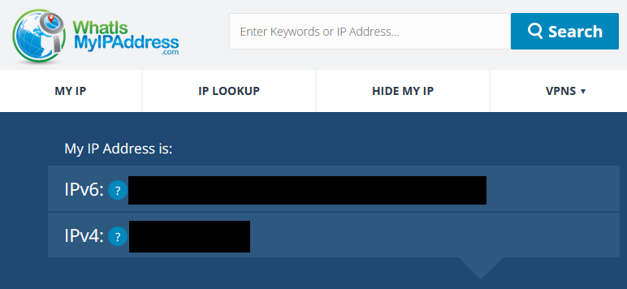
And copy the IPv4 address.
2 - Updating the Server Settings
2.1 - Open the nier folder and type cmd to open the Command Prompt


2.2 - Run the Wizard and Update your IP
Copy and paste the following commands:

A prompt will appear asking if you want to use the same settings as before, select "No, reconfigure".
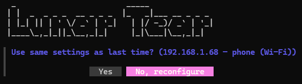
Select "Phone / Tablet on the same network" and press Enter.
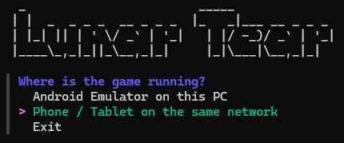
Next select "Something else / I'll type the IP" and press Enter.
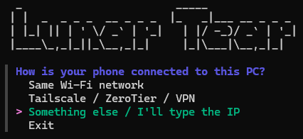
Paste your Public IP and press Enter.
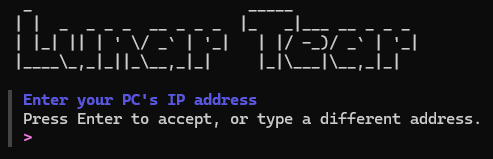
Finally chose "Yes, start".
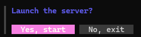
Success
Your server is now running with your Public IP!
3 - Patching the APK
Note
This is an abridged version of the main setup guide. If you encounter any difficulties, please refer to Step 5 of the Server Setup Guide.
3.1 - Open the Website Google Colab and open lunar_tear_patcher.ipynb

3.2 - File Source
Copy and paste the command in the apk_source.
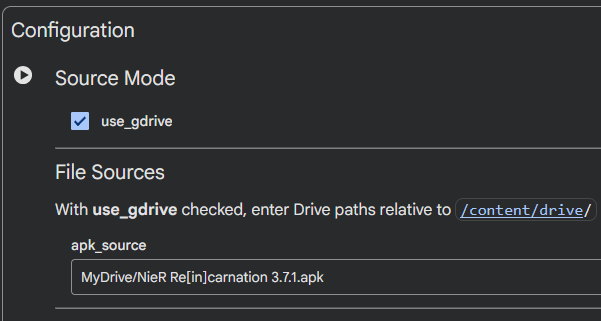
3.3 - Server IPs
Note
Remember to use your own IPs. Not the ones in the images.
grpc_addr = "xxx.xxx.xxx.xxx:8003"
http_addr = "xxx.xxx.xxx.xxx:8080"
auth_host = "xxx.xxx.xxx.xxx:3000"
Copy and paste your Public IP in each field.

3.4 - Run the Patches
Press the Run button next to "Configuration".
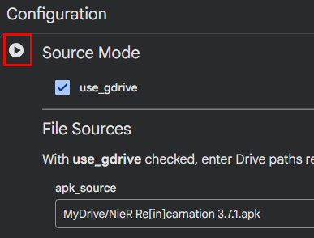
Allow access to your Google Drive and let the patch run.

Next, press the Run button next to "Install dependencies" and let the patch run.
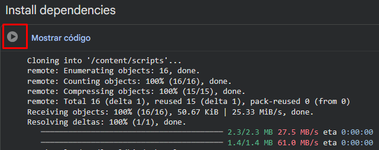
Do the same in the "Patch APK" section and let it run.
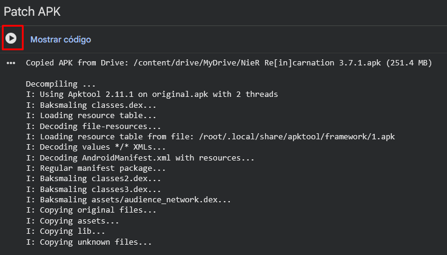
When the patching ends a new folder will appear in your drive named lunar-tear-output. Open the folder and download your new APK.
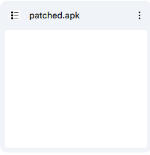
Success
You now have the new APK ready to be installed and to connect to your server!
4 - Enjoy playing with your friends in your server
Success
Everything is ready now! Have fun playing with your friends!
Tip
Should you ever need to change your server IP again, simply repeat the above steps.